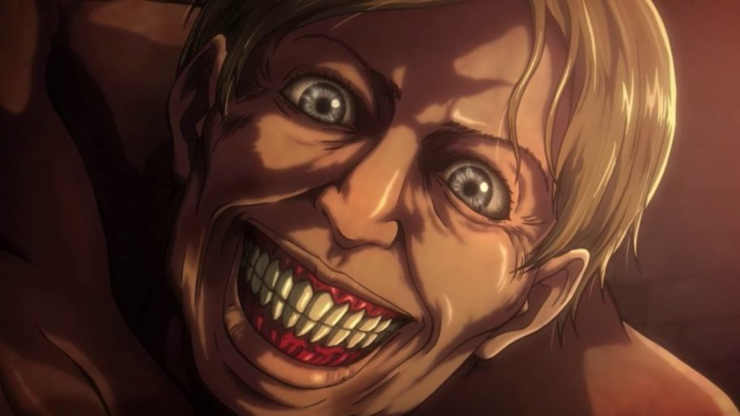
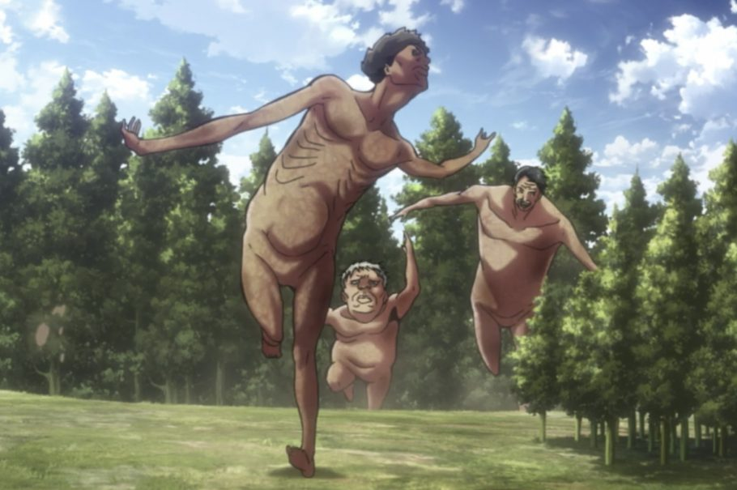
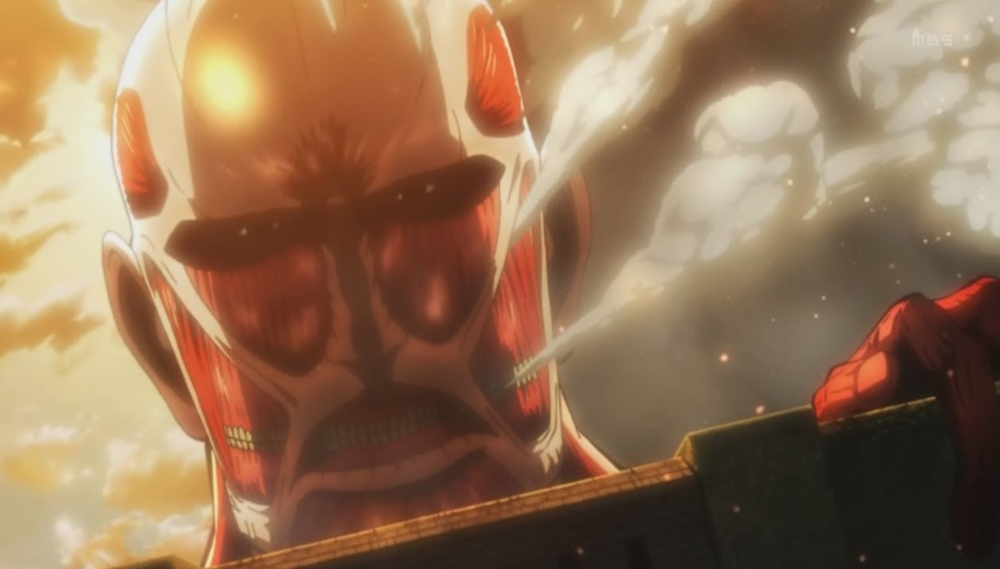
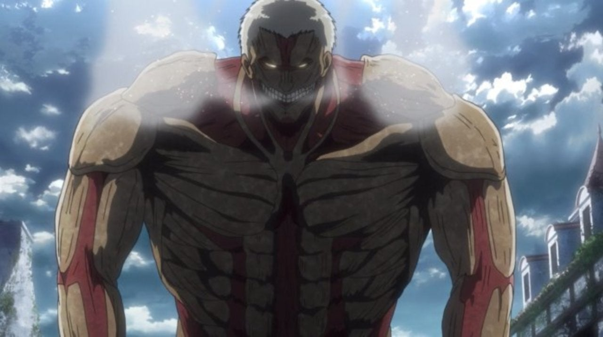
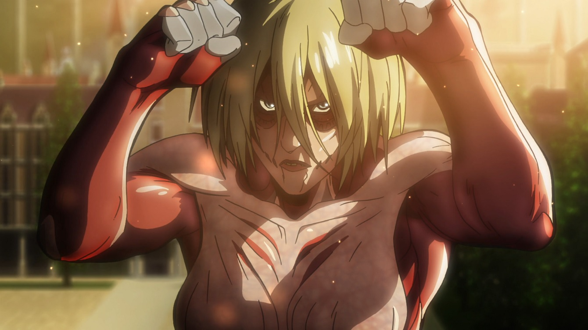
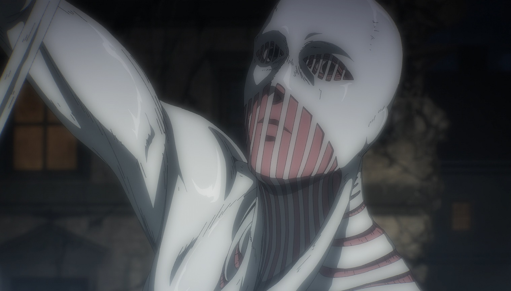
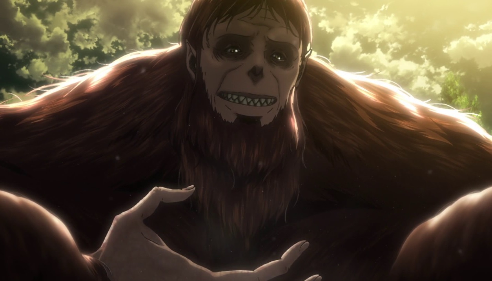
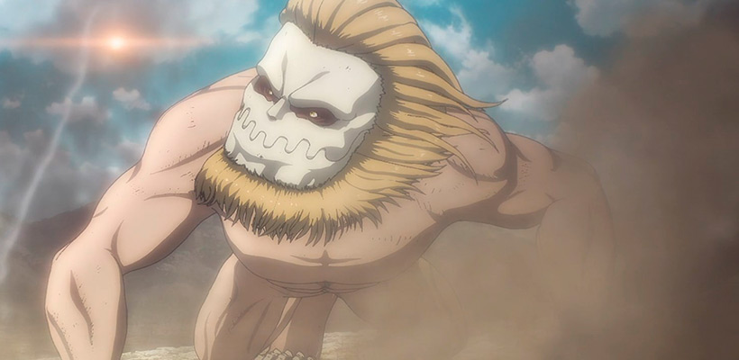
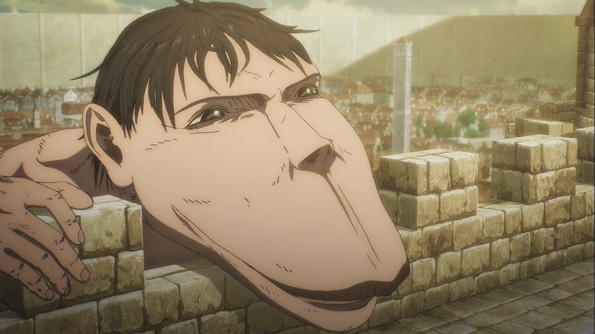

TITÃS PUROS
Eles são a grande maioria dos titãs existentes,e como o próprio nome sugere, eles são titãs puros e do tipo mais básico que existe.
Quando um Eldiano comum que não tem um Titã Original dentro dele recebe a seringa com fluído espinhal, ele se torna um Titã Puro.
Esse tipo de Titã não tem nenhum tipo de controle sobre si e vira uma besta sem rumo, apenas buscando se alimentar de humanos a todo custo.
Sozinhos eles não são grande ameaça para soldados treinados, mas um bando deles se torna um grande problema.
TITÃS ANORMAIS
Eles são quase a mesma coisa que Titãs Puros, mas com algumas diferenças.
Enquanto Titãs Puros simplesmente andam por aí atrás do humano mais próximo, esse tipo parece ter um certo nível de inteligência.
Ele é capaz de ignorar completamente humanos para ir atrás de um grupo maior, tendo assim um senso de caça superior ao de Titãs Puros.
Eles são até mesmo capazes de formular estratégias simples, como correr a toda velocidade quando necessário, ou esperar sorrateiramente do lado de fora até que o humano que está preso precise sair.
TITÃS ORIGINAIS

Existem apenas 9 no mundo inteiro. Eles são titãs especiais que são capazes de se transformar a hora que quiser e de continuar consciente quando está transformado.
Os titãs em geral são humanos transformados, e inconcientes do que estão fazendo, é uma transformação irreversível quando NÃO se é um Titã Original.
Pra se tornar portador de um Titã Original, primeiro é preciso se tornar um titã puro, usando uma seringa com fluído espinhal. Depois é só comer o portador de um titã original e você terá seus poderes.
OS 9 TITÃS ORIGINAIS
- FUNDADOR
- COLOSSAL
- ATAQUE
- BLINDADO
- TITÃ FÊMEA
- MARTELO DE GUERRA
- BESTIAL
- MANDÍBULA
- TITÃ QUADRÚPEDE
TITÃ FUNDADOR

O Titã Fundador é o que foi de Ymir Fritz, que, segundo a lenda, teria entrado em contato com "Alguma Coisa" para adquirir os poderes dos Titãs.
Sua principal habilidade é controlar a mente dos demais titãs e as memórias de quem ele bem entender.
COLOSSAL
Esse é o maior Titã já registrado na série, com cerca de 60 metros de altura. Ele já teve diversos portadores.
O Titã Colossal consegue utilizar sua grande capacidade energética para criar ventanias e explosões.
Sua principal habilidade é evaporar parte de seu corpo para liberar quantidades absurdas de fumaça.
TITÃ DE ATAQUE

É responsável por lutar na Grande Guerra Titã em um outro momento, tem capacidade de acessar e até mesmo intervir em memórias de portadores antigos e até futuros.
Dessa forma, ele já teve, ao longo da série, três portadores apresentados e seguiu a aparência de cada um deles.
BLINDADO
Possui apenas 15 metros de altura, mas seus poderes incluem uma força muito potente, além de uma armadura em sua pele que lhe proporciona um alto teor de defesa.
Embora tenha todas essas vantagens, seu corpo não lhe dá tanta velocidade.
TITÃ FÊMEA
Seu maior poder é atrair Titãs puros, além de conseguir deixar a sua pele tão dura como o aço. Apesar de seus 14 metros de altura, sua aparência expõe todos os seus músculos, já que não há nenhum tipo de pele lhe revestindo.
Sua agilidade e resistência são impressionantes, principalmente pelo fato de sua portadora ser uma "Guerreira" bem treinada
MARTELO DE GUERRA
O titã Martelo de Guerra logo impressiona por sua grandiosa força. Além disso, ele consegue transformar sua pele em diferentes armas, o que pode ser bastante perigoso em uma batalha.
Não existem muitos detalhes sobre ele pois teve pouco destaque na obra, já que foi apresentado na 4° temporada, "The Final Sesion".
Porém, seus poderes são mostrados mais quando Eren consegue seu poder, e o usa na forma de Titã Original.
BESTIAL
Embora tenha uma aparência bastante esquisita e assustadora, semelhantes a um macaco, o Titã Bestial tem uma força descomunal, capaz de coisas absurdas.
Entre suas habilidades, estão a capacidade de lançar objetos e outras coisas com enorme precisão, além de uma capacidade de destruição altamente perigosa.
MANDÍBULA
Esse Titã possui apenas 5 metros de altura, mas suas garras afiadas e dentes extremamente intimidadores são capazes de quebrar qualquer tipo de material.
Além disso, uma alta velocidade e agilidade são atribuídos a ele, pois seu tamanho reduzido ajuda nessas questões.
TITÃ QUADRÚPEDE
Não é tão grande quando os outros, e como o próprio nome indica, anda sobre seus quatro membros.
Sua principal habilidade é a grande resistência, que, junto de sua velocidade, lhe proporciona também a capacidade de ficar sobre sua forma de titã durante muito tempo.
QUER SABER MAIS E EXPLORAR UM POUCO DESDE MUNDO INCRÍVEL?
Clique aqui para ir a PÁGINA 2REFERÊNCIAS TIRADAS DO FANDOM OFICIAL